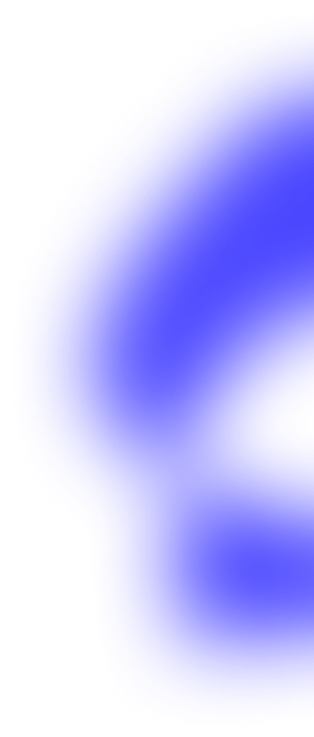

<div id="aboutMe" class="aboutMe-wrapper" data-aos="zoom-out">
  <div class="aboutMe-left" id="aboutMe-left">
    <h1>About me </h1>
    <span>
      Hi! I'm an ambitious front-end developer based near Salzburg, Austria. Inspired by the endless potential of IT,
      I'm looking forward to developing user-friendly websites and applications that are both visually appealing and
      intuitive.
    </span>
    <div class="about-me-second-row">
      <div class="text-area">
        
        <span>
          I view programming as a creative challenge, not just a technical task. It fills me with pride to turn complex
          problems into simple solutions. My goal is to help people achieve their goals by turning their visions into
          reality through my work.
        </span>
      </div>
      <div class="text-area">
        
        <span>
          My work style is characterized by my willingness to learn, my quick adaptability, and my excellent
          communication skills. Clean code is my focus. Being part of this dynamic industry allows me to help shape the
          digital world and explore the many creative possibilities of IT. This drives my passion every day.
        </span>
      </div>
    </div>
  </div>
  <div class="aboutMe-right">
    <div class="image-small">
      
    </div>
    <div class="horizontal-line"></div>
  </div>
</div>

